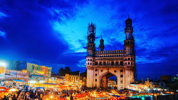
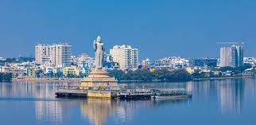
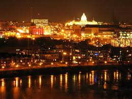

Hyderabad, the "City of Pearls," is a captivating blend of 400-year-old Nizami history and modern high-tech growth. Tourists can explore iconic landmarks like the bustling Charminar, majestic Golconda Fort, and the royal Chowmahalla Palace, while experiencing a unique cultural mix of tradition and modernity.
Beyond its history, Hyderabad is a UNESCO creative city of gastronomy, famous for its aromatic Hyderabadi biryani and bustling, colorful markets like Laad Bazaar. Visitors can explore the sophisticated IT hub, HITEC City, or enjoy the scenic, serene banks of Hussain Sagar Lake, offering something for history buffs, shoppers, and food lovers alike.